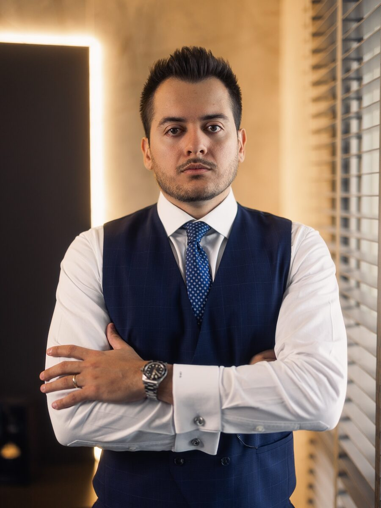

Práctica Internacional
Defensa penal de extranjeros en Brasil.
El despacho integra la lista de abogados de la Embajada de EE.UU. en Brasil y representa a ciudadanos extranjeros en casos penales en todo el país — en español, portugués e inglés.
Cómo ayudamos
De la detención a la representación completa
Desde 2016 el despacho representa a ciudadanos extranjeros en casos penales en Brasil — de la detención en flagrancia y la audiencia de custodia al jurado y los recursos ante los Tribunales Superiores en Brasilia.
Mantenemos informadas a las familias en el exterior, hacemos de puente con las oficinas consulares y conducimos cada etapa procesal en portugués para que usted no tenga que preocuparse.
Guardia 24h para detenciones: un abogado responde de inmediato, explica la situación en su idioma y actúa en la audiencia de custodia — que ocurre dentro de las 24 horas de la detención en Brasil.

Frentes de actuación
Qué atendemos
Detenciones y audiencias de custodia
Respuesta inmediata a detenciones de extranjeros en cualquier lugar de Brasil, con defensa en la audiencia de custodia y Habeas Corpus cuando sea necesario.
Investigaciones y procesos penales
Defensa completa en investigaciones y procesos, incluidas acusaciones por drogas, delitos financieros y jurado.
Delitos económicos y tributarios
Defensa en derecho penal económico: delitos contra el sistema financiero, acusaciones de lavado de dinero y delitos tributarios que involucran empresas y ejecutivos.
Puente consular y familiar
Comunicación constante con consulados y con la familia del cliente en el exterior, con actualizaciones del caso en español o inglés.
¿Detenido o investigado en Brasil?
Atendemos 24/7. Un abogado penalista hablará con usted en español y le explicará exactamente los próximos pasos.